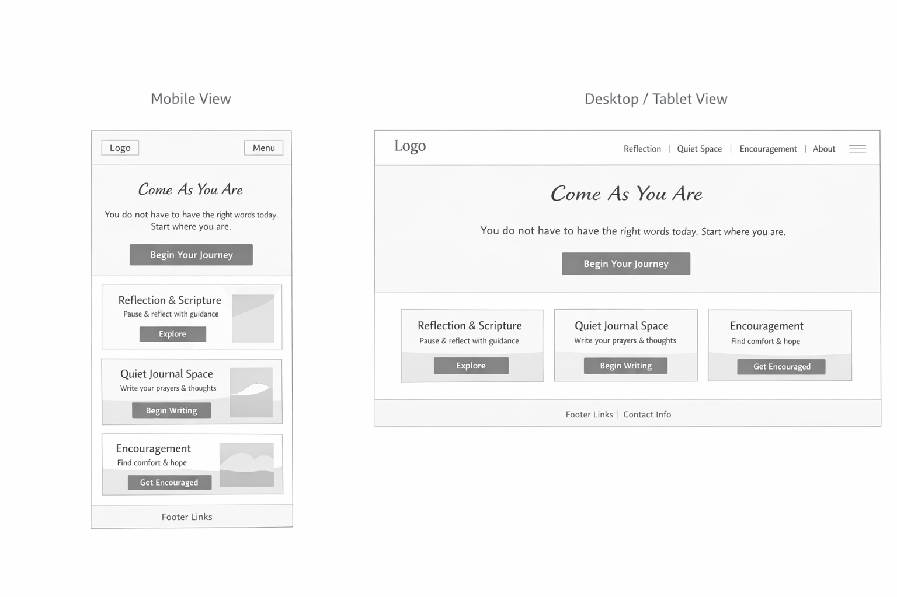

Milky Coffee
#9B7D61
Used for headings, logo details, and warm grounded accents.You are safe here. You do not have to arrive with perfect words.
"Come to me, all who are weary and burdened, and I will give you rest."
Matthew 11:28
Begin Your JourneyCome As You Are
This name reflects the heart of the project - that anyone can approach God honestly, without pretending to be okay. It speaks to vulnerability, acceptance, and the kind of faith that does not require you to have it all together first.
This site opens into a calm, faith-based space for honest reflection and spiritual check-ins. From the home page, visitors move into pages where they can explore what they are feeling, sit with their thoughts, journal prayers, and receive scripture-based encouragement. The goal is not to instruct or fix - it is to stay with the person, gently, wherever they are.
The site uses the natural earth palette from the reference image. These colors support a quiet, grounding mood and will be used consistently throughout the project.
#9B7D61
Used for headings, logo details, and warm grounded accents.#DAA38F
Used for soft emphasis, call-to-action accents, and gentle highlights.#E9D7C0
Used for cards, section backgrounds, and soft neutral surfaces.#92ADA4
Used for calm accent blocks, supporting panels, and quiet visual balance.#FEDA86
Used for the main background glow and light areas that feel hopeful and welcoming.Used for the site title, section headings, and scripture text because it feels gentle, reflective, and closer to the elegant style shown in the wireframe.
Used for body copy, navigation, buttons, and planning details because it stays clean and readable without feeling heavy.
The overall typography should feel soft, calm, and welcoming. The main design relies on the serif and sans-serif pairing rather than decorative script.
The selected logo uses a tree-of-life symbol with rooted branches, warm circular details, and natural tones to suggest growth, grace, shelter, and spiritual grounding.
It feels more meaningful and established than the earlier concept and matches the calm, earthy tone of the website more naturally.
The home page is a full-screen landing page with the artwork blended into the natural earth palette.
It centers the site name and a comforting scripture so the first feeling is quiet, gentle, and safe.
The page should feel spacious and emotionally calm rather than busy.
Its purpose is to welcome the visitor before they move into the rest of the website.
The landing page keeps its content minimal: the site name, a short reassuring line, a scripture verse, and a welcoming button.
This simplicity matches the wireframe and keeps the entry experience from feeling overwhelming.
The background art supports the message instead of competing with it.
The emotional tone is soft, prayerful, and restful.
From the home page, visitors use navigation and clear buttons to move into the rest of the website.
The main pages are Reflection, Quiet Space, Encouragement, and About.
This keeps the website page-based, while the landing page remains the emotional starting point.
The home page sets the tone, and the other pages carry the experience forward.
Users answer gentle questions about what they are feeling and receive a scripture-based response.
This page includes the pause moment, honest question, reflection prompt, and encouragement message.
A soft writing area where users can journal thoughts, prayers, and emotions in their own words.
This page includes a calm verse, a large text area, and the option to return to reflection or restart.
A simple page for users who want immediate comfort without going through a full reflection flow.
It would feature short scripture messages, gentle reassurance, and a peaceful visual style.

A short personal story about the creator, the heart behind the project, and optional links to a social platform or creative profile.
A searchable encouragement library with categories such as Anxiety, Hope, Gratitude, and Overwhelmed.
Helpful external devotionals, faith-based communities, suggested readings, and support tools for users who want to go deeper.